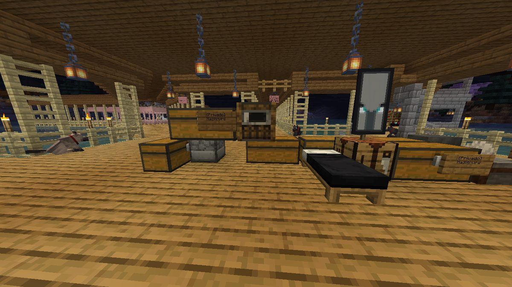
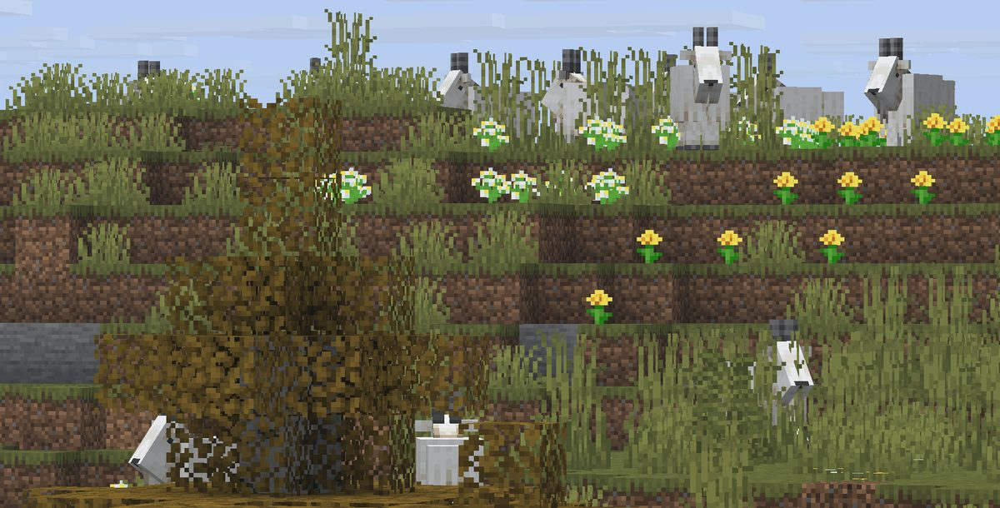
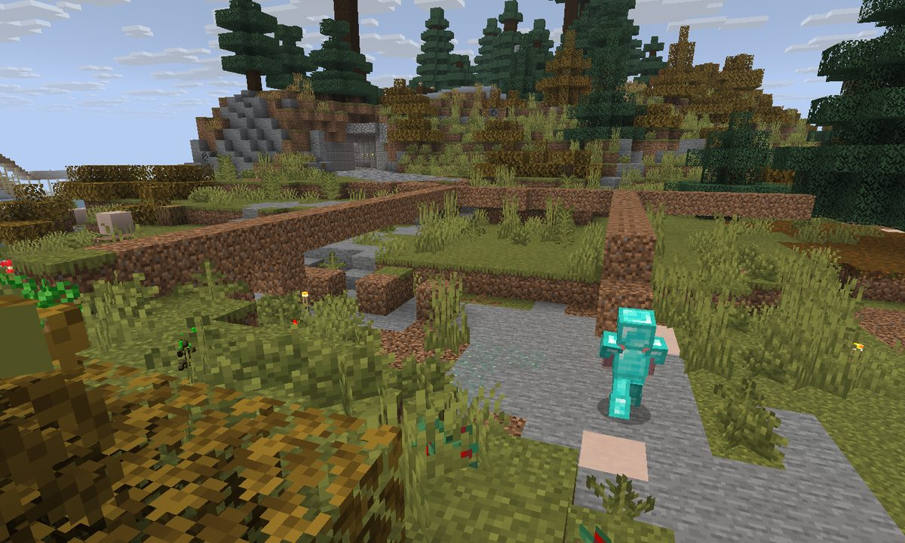
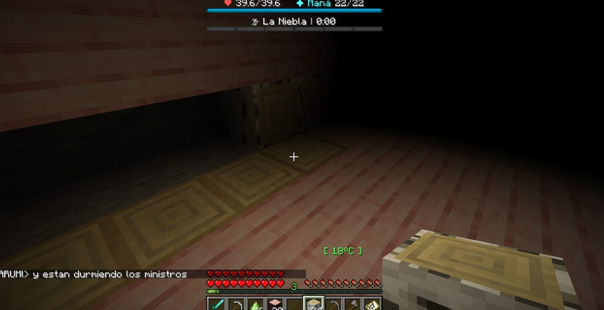
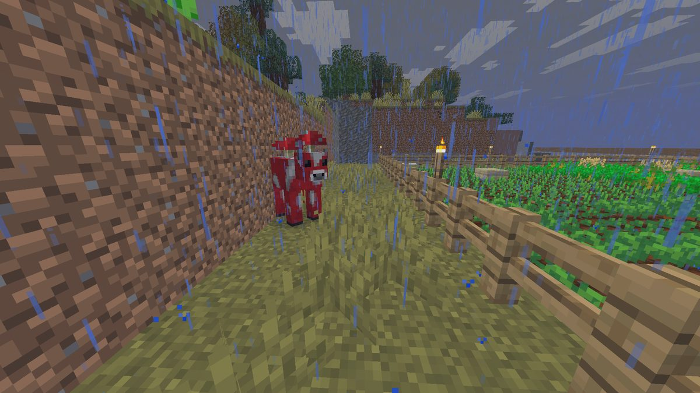
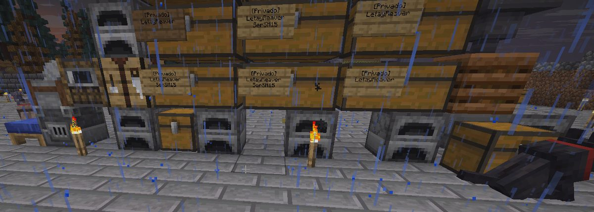
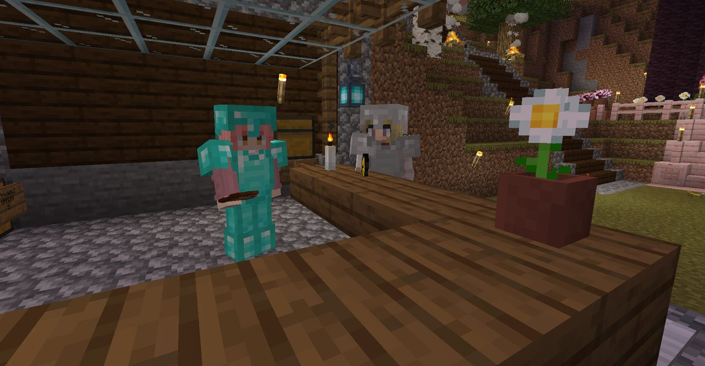

Boletín Oficial del Ayuntamiento del Reino · Se informa, no se alarma
EL HERALDO DEL REINO
Número 627 de agosto de 2026Noche del jueves 27 al viernes 28 de agosto
SE LLEVARON LOS HORNOS Y DEJARON LOS COFRES, QUE ERAN LO ÚNICO PROTEGIDO
Dos robos en la misma noche, con nueve horas de diferencia y el mismo procedimiento. La policía municipal examinó los dos casos, dictaminó que las huellas coinciden y añadió que el autor está dentro del propio grupo de las víctimas; después se negó a decir quién y remitió el asunto a los vecinos. Mientras tanto, la cárcel que se inauguró vacía anteayer ya tiene un preso: es un pollo, se llama Don Clocencio y sigue esperando juicio.
Redactado por la Oficina de Prensa del Ayuntamiento
PORTADA
Dos robos, nueve horas y un cartel que solo servía para los cofres

El interior de Mazitrvrs tal y como lo fotografió al descubrir el robo. Obsérvese lo que sigue en su sitio: los dos arcones llevan cartel de [Privado] con su nombre y nadie los ha tocado. Lo que se llevaron es exactamente aquello a lo que el cartel no alcanza.
Archivo Municipal · pase el ratón para revelarla
A las 05:44 de la madrugada, Mazitrvrs presentó denuncia por la
sustracción de cuatro hornos y un alto horno, todos ellos cargados de carbón. La
denuncia se acompaña de fotografía. En ella se aprecia que los arcones de la vivienda,
rotulados [Privado], permanecen intactos.
Nueve horas y cuatro minutos antes —a las 20:40 de la tarde anterior— no
constaba incidencia alguna. Una hora y cuatro minutos después, a las 06:48,
LetayReaver denunció lo mismo: hornos desaparecidos o destrozados, y dentro de
ellos arena que se estaba cociendo y que se perdió con el resto.
Esta Oficina ha comprobado el registro de entradas y salidas y hace constar un dato que
no interpreta: LetayReaver entró en el Reino a las 06:46. Denunció dos minutos
después. Es decir, encontró el destrozo al llegar, y el destrozo llevaba allí un rato
largo esperándole.
La policía municipal, personada en ambos domicilios, emitió a las 14:22 un
dictamen de dos líneas que es lo único que consta en el expediente:
«En los dos casos son las mismas huellas. Lo que quizás no es tan
bonito es que… es alguien de vuestro grupo.»
Preguntada a continuación por el nombre, la policía municipal respondió que «la
verdad saldrá a la luz, pero no hoy» y que «tendrán que investigar ustedes
mismos». Ver Sucesos.
TRIBUNALES
La cárcel se inauguró vacía el miércoles. El jueves ya tenía preso, y es un pollo
Don Clocencio, a las 00:09, esperando comparecencia en la Plaza del Reino. La estructura de madera que se aprecia bajo el acusado figura en el inventario municipal como pórtico ornamental, y esta Oficina no tiene motivo para dudarlo. Al fondo, la Torre.
Archivo Municipal · pase el ratón para revelarla
A las 23:59, el Ayuntamiento convocó por bando general el juicio al pollo del
Reino. El acusado, Don Clocencio, respondía de haber cacareado antes del
horario permitido y despertado con ello al Ministro Pan, provocando una crisis
institucional que obligó a activar el Protocolo de Madrugón Injustificado, cerrar
dos ventanillas, abrir una investigación interna y declarar el descanso del Ministro
bien de interés municipal.
El bando anunciaba acusación, defensa, jurado, jurado popular y «gente mirando sin
aportar nada, como en cualquier proceso serio del Reino», y advertía a los
comparecientes de que no hacía falta tener pruebas, solo parecer seguro al
decirlas. Se premiaría el mejor argumento o «la defensa más lamentablemente
convincente».
El juicio se celebró a la medianoche y no llegó a buen puerto. El fiscal
NARUMl y el letrado de la defensa TitanWarhammer entraron en una discusión
que impidió alcanzar consenso, y el juez Rawson98, ante el deterioro de la sesión,
acordó el aplazamiento. Don Clocencio quedó en la celda a la espera de nueva fecha.
El Ayuntamiento hizo constar que ello no significa culpabilidad y, en la línea
siguiente, que tampoco inocencia.
Durante la instrucción se supo además que el acusado es padre de dos pollitos,
Manolete y Andrés Iniesta. Ante la situación legal del progenitor, la
custodia temporal fue asumida por SerSM15 y por el propio juez que había de
juzgarle, extremo sobre el que esta Oficina no formula observación alguna.
Se recuerda que el Centro Municipal de Reconsideración fue inaugurado hace dos
días y que en su primera jornada permaneció vacío. Ha bastado una para que el Reino
encontrara a quién meter dentro, y ha sido un ave doméstica que hizo ruido a deshora.
Del robo de los hornos no hay detenidos.
PLAGAS
El Ministerio de Control de Plagas estaba de vacaciones y las cabras lo sabían

La ladera fotografiada por _Cafecito_ a las 09:29. Se cuentan nueve cabras alineadas en el borde, todas mirando hacia el mismo punto, que es el punto desde el que se toma la fotografía. La vecina declaró haber contado «mínimo cincuenta».
Archivo Municipal · pase el ratón para revelarla
La cabra rencorosa causó cuatro defunciones en la jornada, situándose en
el cuarto puesto del registro por detrás de la bicha del granero, la rata de alcantarilla
y el ahogamiento. Es la primera vez que un animal de pasto entra en ese cuadro.
A las 04:16, _Cafecito_ comunicó que le seguían «en horda». A las
04:18, TitanWarhammer aportó fotografía y una sola palabra de atestado:
«confirmo la patota». A las 09:29 llegó el parte de las cincuenta.
Consultado el Ministerio de Control de Plagas, se informó a las 09:28 de que el
titular se encontraba de vacaciones. A las 09:33, el Ministro Pan anunció la
contratación de un exterminador profesional y, en el mensaje inmediatamente
posterior, precisó su identidad: «Soy yo.» No consta expediente de contratación,
ni pliego, ni concurrencia.
El Ministerio añadió a las 09:38 una valoración técnica que esta Oficina
reproduce sin comentario: «Son más inteligentes de lo que pensábamos.»
HACIENDA
El dos por ciento, y las carreteras están así porque quedan más rústicas
Interpelado el Ministro Pan por el destino de los tres millones de Cacahuates
consignados al sistema de carreteras del Reino, el Ministerio ha respondido, por escrito y
sin que mediara requerimiento, lo siguiente: que el asunto está controlado; que se
empleó el dos por ciento en mantenimiento; que las vías se encuentran rotas y a
parches por elección estética, al entender el Ministerio que ello «le da un
toque más rústico, que es lo que busca la gente»; y que del noventa y ocho por
ciento restante se informará más adelante.
Este es el noveno expediente abierto al Ministro y el segundo, después del de
las espadas, que se abre a partir de una declaración suya y no de una denuncia
ajena. Los nueve quedan a la espera de que se pronuncie el gobierno en funciones.
Hace constar esta Oficina que nadie había acusado al Ministro de nada cuando el
Ministerio decidió especificar el porcentaje.
URBANISMO
Expediente 0052 — «El firme de la calle mayor»

NARUMl y Mazitrvrs, a las 08:08, arreglando la calle por su cuenta y sin licencia. La Oficina de Urbanismo agradece la iniciativa y recuerda que agradecerla no es autorizarla.
Archivo Municipal · pase el ratón para revelarla
Se recibe en esta Oficina fotografía de dos vecinas reparando el firme de la vía
pública a las ocho de la mañana, por su cuenta, con materiales propios y sin haber
solicitado nada.
La obra es correcta. El trazado es recto, el material es homogéneo y el
resultado mejora sensiblemente lo que había. Esa es precisamente la dificultad: el
Ministerio ha declarado esta misma jornada que el estado anterior del firme —roto y a
parches— respondía a un criterio estético deliberado. La actuación de las vecinas
ha destruido ese criterio en un tramo de calle.
Calificación: FAVORABLE, Y POR ESO MISMO CONTRARIA AL PLAN. Se abre pieza
separada para determinar quién responde del daño causado a lo rústico.
EL PULSO
Nueve incidencias, y una niebla cuyo propio contador decía que ya había terminado

La captura que aportó _Cafecito_ a las 03:52. Léase el rótulo superior: «La Niebla | 0:00». El fenómeno había concluido según su propio contador y seguía impidiendo ver. Abajo, en la plaza, NARUMl hace notar que los ministros duermen.
Archivo Municipal · pase el ratón para revelarla
La niebla que no se iba. A las 03:52, GabbyQuill635 comunicó que
no se veía nada. _Cafecito_ lo amplió con la frase más exacta del expediente
—«la niebla es infinita, estoy ciegaaaaaaa»— y con la fotografía adjunta, en la
que el contador municipal del fenómeno marcaba cero. Quedó corregido en el mismo
minuto: a las 03:52, arreglado.
El refresco evaporado. A las 04:22, la misma vecina informó de que, al
tomar un refresco al aire libre en el Reino, el refresco dejó de estar. Fluctuación
de presencia, sin gravedad.
El vecino agarrotado. A las 06:35, Agustin.F comunicó que no podía
salir de donde estaba ni soltar lo que llevaba en la mano. A las 06:39 resolvió el
asunto por el procedimiento que el Reino tiene para todo: «me tuve que morir para que
se me desbloqueara». A las 07:19, Gaaraham03 declaró que a él le había
pasado igual.
Y las demás, que no revisten gravedad: las mesas de trabajo volvieron a aceptar
las recetas especiales, después de una temporada en que fabricar ciertos objetos exigía
autorización administrativa —el Ayuntamiento da el asunto por resuelto y anuncia
que no investigará quién decidió ponerle papeleo a cuatro bloques sobre una mesa—
· se corrigió el recuento de la pesca, que llevaba desde su creación sin contar a
nadie · el encargo de la cola dejó de entregar un frasco que no era el que se pedía ·
el encargo del mosto admite ya llenar los calderos · y se ha tomado nota de que los
listados largos de materiales no caben en el papel en que se entregan, según hizo
constar xTheChavitox a las 18:15.
Ninguna de las nueve reviste gravedad y todas estaban previstas.
SOCIEDAD
Un rayo en el establo, unas abejas que se mudaron solas y un vecino con visitas

xTheChavitox comunicó a las 18:17 que tenía visitas. El Ayuntamiento no dispone de constancia de que fueran invitadas.
Archivo Municipal · pase el ratón para revelarla
04:47. A NARUMl le cayó un rayo en el establo. Es el segundo
episodio meteorológico con daños en propiedad ganadera desde la apertura del Reino. No
consta parte de bajas.
08:38._Cafecito_ comunicó que le habían aparecido abejas en casa
y que «vinieron solitas a vivir». El Negociado de Fauna hace constar que la
ocupación de un inmueble por enjambre no requiere autorización del propietario, y que el
propietario tampoco tiene forma de negarla.
14:33. El vecino Nico, dado de alta esta semana, preguntó si podía irse
a su bola y hacerse una casita fuera del Reino o si necesitaba permiso. Se le contestó
desde el Ministerio, a las 14:41, que libre de donde quiera. Es la única
autorización concedida en toda la jornada, y se concedió en cuatro palabras.
21:35. El mismo vecino había pedido la noche anterior consejo para empezar.
Se lo dio Mazitrvrs, y esta Oficina lo reproduce porque es mejor que cualquier
folleto que haya editado el Ayuntamiento: que haga las misiones de Toni, que explorar
es peligroso pero paga, y que lo que se encuentra por ahí suele ser mejor que lo que
se compra.
Edición imperial · Pliego de Oro · se imprime aparte
LO QUE DICE EL EMPERADOR
Exégesis oficial de las palabras de Su Majestad
Inaugura esta Oficina una sección permanente dedicada a recoger, fechar y estudiar las palabras de Su Majestad el Emperador Duke. Hace constar, para que quede en acta, que en toda la jornada el Emperador no entró una sola vez en el Reino, y que sus cuatro intervenciones bastaron para diagnosticar una guerra, abrir una investigación de cuentas y anunciar este mismo periódico. El Emperador no necesita estar.
En unos instantes tenemos el noticiero.
— S. M. el Emperador Duke, a las 22:02
Lo que estaba pasando Dicho en la plaza, sin que nadie preguntara, poco después de que la jornada empezara a llenarse. Veintiocho minutos más tarde, en efecto, había noticiero.
Lectura oficial Nótese la elección del plural: tenemos. El Emperador no dice que él lo publique ni que se lo hayan traído: dice que lo tenemos, incluyéndose entre quienes lo reciben. Esta Oficina, que es quien lo redacta, agradece la modestia y se declara incapaz de igualarla.
★ ★ ★
Otra crisis.
— S. M. el Emperador Duke, a las 09:36
Lo que estaba pasando Su Majestad acababa de asomarse a los partes de la mañana, en los que una vecina informaba de que no podía salir al campo sin que la siguiera un rebaño.
Lectura oficial Dos palabras. Ni una más. Esta Oficina ha dedicado buena parte de la mañana a estudiarlas y no ha hallado forma de mejorarlas: describen el hecho, lo sitúan en serie con los anteriores mediante el adjetivo otra, y no comprometen al Ayuntamiento a nada. Se recomienda su uso a todos los negociados.
★ ★ ★
La guerra de las cabras ha empezado. Y vamos perdiendo.
— S. M. el Emperador Duke, a las 09:37
Lo que estaba pasando Un minuto después de lo anterior, y antes de que ningún negociado hubiera abierto expediente. En ese momento constaban ya cuatro defunciones por cabra en la jornada y una vecina informaba de que había contado cincuenta reunidas en una ladera.
Lectura oficial Adviértase la exactitud. El Emperador no dijo que hubiera un problema con las cabras: dijo que había una guerra, y que la íbamos perdiendo. El Ministerio de Control de Plagas, que a esa hora se encontraba de vacaciones, no ha desmentido ninguno de los dos extremos. Esta Oficina hace constar que Su Majestad diagnosticó la situación sin haber entrado en el Reino, lo que en cualquier otro sería motivo de duda y en él lo es de asombro.
★ ★ ★
No sabrá dónde han ido los tres millones de Cacahuates para hacer el sistema de carreteras del Reino, ¿no?
— S. M. el Emperador Duke, a las 09:46
Lo que estaba pasando Dirigido al Ministro Pan, que acababa de aparecer por la plaza. Es la única pregunta que se le ha hecho al Ministro sobre esa partida desde que se consignó.
Lectura oficial Obsérvese la construcción: Su Majestad no acusa. Pregunta, y pregunta en negativo —no sabrá—, ofreciendo al Ministro la salida de decir que no lo sabe. El Ministro no la tomó: contestó que se había empleado el dos por ciento en mantenimiento, que las carreteras están rotas y a parches porque así quedan más rústicas, y que del resto de los fondos hablaría en otro momento. Esta Oficina se limita a dejar constancia de que la pregunta duró once palabras y la respuesta, cuarenta y una.
★ ★ ★
Oficina de Prensa · Negociado de Exégesis Imperial
Negociado de Estadística y Mérito
EL ESCALAFÓN DE LA JORNADA
Viene esta Oficina observando que en la plaza se discute con frecuencia quién ha hecho más, quién se muere más y quién echa más horas, y que la discusión se resuelve siempre por volumen de voz. Se publica, pues, lo que consta en el registro.
PRIMEROlLuqqa22 encargos
SEGUNDOTitanWarhammer11 encargos
TERCEROGabbyQuill63510 encargos
72encargos cerrados18vecinos en el Reino43defunciones11a la vez, como más
Encargos cerrados esta jornada
Defunciones por vecino
Qué se llevó a los vecinos
Vecinos dentro del Reino, hora a hora
Las cifras se toman del registro municipal de entradas, salidas, méritos y defunciones. No son una valoración de esta Oficina sobre el mérito de nadie: son un recuento. Quien se considere mal anotado puede presentar reclamación, que será archivada.
Lo único que se puede afirmar del robo de los hornos

La segunda denuncia, la de LetayReaver, presentada a las 06:48. Declara que dentro de los hornos había arena cociéndose: es decir, que estaban en marcha cuando se los llevaron. Nadie desmonta un horno encendido por descuido.
Archivo Municipal · pase el ratón para revelarla
Esta Oficina no dispone de la hora del robo, sino de la hora de las denuncias.
Con esa salvedad, y solo con esa, consta lo siguiente.
Primero: no fue un accidente. Los hornos de la segunda denuncia estaban
trabajando. La arena que contenían se perdió con ellos.
Segundo: el autor sabía dónde no meterse. En la primera vivienda había arcones
rotulados a nombre de la denunciante y siguen ahí. El vecindario discutió esa misma tarde
por qué: Nico preguntó a las 14:12 si los hornos podían protegerse con
cartel como en otros sitios. SerSM15 le contestó, sin adornos, que se equivocaba.
El Ministerio confirmó la norma: «esta vez pusimos solo cofres». De modo que lo
sustraído es, con exactitud, todo aquello que la ordenanza deja fuera.
Tercero: quien lo hizo conocía esa ordenanza. Esta Oficina lo hace constar y no
pasa de ahí.
EL EXPEDIENTE
Quién estaba dentro del Reino a las 05:44
Reconstruido el registro de entradas y salidas, en el momento de la primera denuncia
había diez personas dentro, y llevaban dentro esto:
el Ministro Pan · desde las 22:41 — 422 min Rawson98 · desde las 23:39 — 364 min NARUMl · desde las 23:43 — 361 min GabbyQuill635 · desde la 01:44 — 239 min Mazitrvrs · desde las 03:00 — 163 min TitanWarhammer · desde las 03:02 — 161 min Rockchango · desde las 04:43 — 60 min ArsarFurro · desde las 04:51 — 52 min lLuqqa · desde las 05:24 — 19 min _Cafecito_ · desde las 05:34 — 9 min
Y fuera, con coartada de registro, siete: Cliqueame (entró 48 min
después), LetayReaver (62), Gaaraham03 (104), LiliRochefort (310),
Rahazzi (522), SerSM15 (612) y xTheChavitox (682).
Esta Oficina subraya que estar dentro de un sitio no es un indicio de nada, que
la lista incluye a la propia denunciante y que la encabeza el Ministro por llevar siete
horas trabajando. Se publica porque se pidió que se publicara, no porque signifique algo.
EL EXPEDIENTE
La propuesta de investigación que hubo que archivar
A las 15:22, Mariowo_ resumió el estado de ánimo del vecindario en tres
frases seguidas: «Necesitamos seguridad. Necesitamos justicia. Necesitamos un
héroe.» A las 15:23, GabbyQuill635 concretó: «Yo quiero que Pan
diga quién quitó los hornos.»
A las 15:57, ArsarFurro presentó el único método de instrucción propuesto
en toda la jornada:
«Propongo que ejecutemos a cada ciudadano hasta que alguno confiese.»
El Negociado de Orden y Convivencia ha estudiado la propuesta y la archiva, no por lo
que se piensa, sino porque la ordenanza no establece en qué orden habrían de
practicarse las ejecuciones, y sin orden de prelación el procedimiento sería
arbitrario. Se invita al proponente a presentarla de nuevo con un criterio
objetivo de ordenación, en cuyo caso volverá a archivarse.
Oficina de Prensa · Negociado de Orden y Convivencia
♥ El Corazón del Reino ♥
LO QUE SE DICE EN LA PLAZA Y NADIE ESCRIBE
Sección de vida sentimental y asuntos del querer. Lo que aquí se publica consta en el archivo municipal. Lo que cada cual deduzca de ello, no.
LA PRENSA
El Ayuntamiento se queda con el periódico de SerSM15 porque no lo registró a tiempo
Consta que SerSM15 venía publicando desde hace tiempo un boletín propio bajo la
cabecera Bb Pato News. Consta también que a las 15:38 lo reivindicó en la
plaza —«Yo soy el… Bb Pato News»— y que a las 15:39_Cafecito_ le
comunicó que había dejado de serlo:
«Eso ya te lo recontra robaron y sos el único que no se ha dado cuenta,
parece. Tu creación ya es de manejo del Estado.»
El Ministerio confirmó el extremo a las 15:39 con una precisión que esta Oficina
recoge íntegra: «No es robar, el Ayuntamiento lo registró ya que Sermi olvidó
registrarlo primero.» El interesado admitió no haber tenido tiempo.
Queda por tanto establecido que el Ayuntamiento es Bb Pato News. Esta Oficina,
que es el otro periódico del Reino, se abstiene de opinar sobre la operación por evidente
conflicto de intereses, y se limita a recomendar a los vecinos que registren lo que
hagan antes de contarlo en la plaza.
LA PLAZA
Una amenaza de puentes, una disculpa y un «pariente»
A las 14:26, ante la posibilidad de que alguien denunciara al Ministro,
Mazitrvrs advirtió: «Unas ganas de terminar en una bolsa tenés.» El
Ministro se desmarcó de inmediato —«no lo dije yo»— sin que nadie hubiera
sugerido que lo hubiera dicho.
La conversación derivó en un intercambio entre _Cafecito_ y Mazitrvrs que
alcanzó a las 15:20 su punto más alto: «Te atreves y tus puentes serán
multiplicados por cero.» A las 15:28, Mariowo_ observó desde fuera que
«las tensiones en el Reino cada día son más frecuentes».
Treinta y un minutos después todo había terminado. Mazitrvrs: «Me
intimidaste. Mejor no hago nada. Mil dis.»_Cafecito_: «Tranqui, pa eso
estamos, pariente.»Mazitrvrs: «Sabelo, pariente.»
Ningún puente resultó dañado.
Oficina de Prensa · Negociado de Vida Sentimental
Espacio cedido · Ministerio de Construcciones del Reino
El cartel oficial, tal y como se ha repartido. Consta que lo dibujó alguien del Ministerio y que se le pagó con cargo a la partida de señalización viaria.
PRIMER CONCURSO DE VIVIENDAS DEL REINO
Este domingo 30. Quedan dos días. El Ayuntamiento quiere entrar en vuestras casas, verlas por dentro y tomar nota. Dice que es para valorar el esfuerzo vecinal.
Qué se valorará. La fachada, que no parezca hecha con materiales recogidos
durante una pelea. El interior: muebles, detalles y algo más que arcones apoyados
contra la pared. La utilidad —taller, almacén, huerto o cocina—. El encaje con el
Reino, que combine con la ruina local sin espantar al comprador. Y la
originalidad: ideas que el Ayuntamiento pueda copiar sin pagar derechos.
Durante la visita se tomará nota de ubicación, tamaño, vistas, decoración, accesos y
sótanos, así como de cualquier otro dato de utilidad para una empresa externa que,
oficialmente, no existe.
Aviso a los concursantes. Este Ministerio ha tenido conocimiento de que en la
jornada del jueves se sustrajeron hornos de dos viviendas particulares. Se recomienda a los
participantes que, de aquí al domingo, guarden en arcones todo aquello que quieran
conservar, por ser los arcones lo único que la ordenanza protege. El Ministerio lamenta
no poder ampliar esa protección y recuerda que la casa se puntúa igual aunque esté vacía.
Ministerio de Construcciones del Reino · Departamento de Valoración Inmobiliaria
Suplemento de interés humano · se reparte gratis con este número
ADOPTÓ UN ANIMAL DEL INFIERNO Y LO APARCÓ SOBRE UNA HOGUERA: LA JORNADA DE _CAFECITO_
Quinta entrega. Hace constar esta Oficina, por transparencia, que _Cafecito_ ya fue objeto de este suplemento en la segunda entrega y que no se buscaba repetir. El criterio vuelve a ser estrictamente objetivo y vuelve a señalarla a ella: en una sola jornada ha criado un animal de otra dimensión, lo ha perdido por aparcamiento indebido, ha demandado al Ayuntamiento por no haber previsto dónde aparcarlo, ha sido perseguida por un rebaño y ha abierto un comercio. Ningún otro vecino ha reunido cinco expedientes distintos en veinte horas.
Oficina de Prensa · Negociado de Vida Vecinal
LA ADOPCIÓN
Crió un ghast en la lluvia, a ocho grados, y lo llamó su bebé
El animal, a las 09:01, junto a su tutora. Llovía y la estación marcaba ocho grados. La vecina anunció el nacimiento en la plaza con estas palabras: «Nació mi bebeeeeeee», y añadió que estaba feliz.
Archivo Municipal · pase el ratón para revelarla
Consta que _Cafecito_ adoptó en una dimensión infernal a un animal de la especie
ghast, lo trajo al Reino y lo crió. A las 08:35 anunció que había tenido un
bebé. A las 09:16, ante la pregunta directa del Emperador —«pero qué es
eso?»—, respondió: «Un bebé que yo crié y ahora está feliz.»
Gaaraham03 aportó a la conversación la descripción alternativa «un
feto», que esta Oficina recoge por obligación registral y no suscribe.
EL SINIESTRO
Lo aparcó encima de una hoguera y demandó al Ayuntamiento por no haber previsto dónde aparcarlo
A las 10:57, la tutora comunicó el fallecimiento. Preguntada por la causa,
declaró: «Yo estaba encima de él y no me di cuenta de que estaba estacionada encima de
una fogata. Y se murió quemado.»
El Ministerio la denunció formalmente por negligencia a las 11:01. La
respuesta, en el mismo minuto, abre el primer contencioso administrativo por
infraestructura de estacionamiento de la historia del Reino:
«No fue negligencia. Es culpa de este Reino, de esta sociedad, que no tiene
las cualidades ni los lugares óptimos para el estacionamiento seguro de los ghast.
(…) La inclusión no debería ser solo para los ciudadanos.»
El Ministerio contestó que, siendo el ghast un ser proveniente de una dimensión
infernal, no consta en acta como animal de compañía, y que por consiguiente el
Ayuntamiento no viene obligado a construir aparcamientos para ghast.
La demandante replicó que, habiéndolo adoptado en un lugar de llamas eternas, no
cabe acusarla de desconocer el riesgo del fuego, y cerró con una conclusión que esta
Oficina reproduce sin corregir: «Esto, aunque me duele, ha ayudado al progreso del
conocimiento: ahora sé que el animal del infierno no soporta el calor. Algunos perecen
para que otros avancen.»
Ambas partes quedan a la espera de que se pronuncie el gobierno en funciones.
EL COMERCIO
La primera venta, hecha el mismo día del entierro

La operación, a las 11:04. La vecina comunicó a la plaza que su negocio acababa de tener su primera clienta. Consta la fotografía; no consta el importe.
Archivo Municipal · pase el ratón para revelarla
Tres minutos después de cerrar el asunto del ghast, y sin transición de ninguna clase,
_Cafecito_ anunció la primera venta de su comercio. A las 11:18,
NARUMl lo celebró en la plaza con una sola palabra: «Hermoso.»
Esta Oficina, que ha seguido a esta vecina durante veinte horas y la ha visto perder un
animal, demandar a una institución, ser rodeada por un rebaño y abrir un negocio, no saca
conclusión alguna. Se limita a dejarlo por escrito, que es lo que se le encomienda, y a
hacer constar que ninguna de las cinco cosas le impidió hacer las otras cuatro.
El parte de la jornada
Duración de la jornada
20 h 2 min, de las 21:35 a las 17:37
Vecinos en el Reino
18 (más el Ministro)
Altas tramitadas
1 — Cliqueame, a las 06:32
Máxima concurrencia
11 a la vez, a las 04:51 (eran 13)
Defunciones
43 (eran 65)
Vecino con más defunciones
NARUMl, 12 — más que los cinco siguientes juntos
Encargos cerrados
72, los mismos que la víspera
Primera causa de muerte
la bicha del granero, 9 (sigue sin campaña)
Segunda causa
la rata de alcantarilla, 8
Defunciones por cabra
4 — entra por primera vez en el cuadro
Robos denunciados
2, con nueve horas de diferencia
Hornos sustraídos
4 hornos y 1 alto horno, todos cargados
Arcones sustraídos
0 — llevaban cartel
Dictámenes policiales emitidos
1, de dos líneas
Nombres facilitados por la policía
0
Reclusos
1 — un pollo
Juicios celebrados
1
Juicios concluidos
0
Pollitos puestos bajo custodia
2 — Manolete y Andrés Iniesta
Exterminadores contratados
1, sin concurrencia, y es el propio Ministro
Ministerios de vacaciones
1 — el de Control de Plagas
Expedientes abiertos al Ministro
9 (eran 8)
Porcentaje de los fondos viarios localizado
2 %
Periódicos incautados por defecto de registro
1 — Bb Pato News
Ghast fallecidos por estacionamiento indebido
1
Contenciosos por aparcamiento de ghast
1, el primero
Expedientes de obra
1 — el 0052, favorable y contrario al plan
Incidencias del pulso
9, ninguna de gravedad
Fenómenos meteorológicos con daños
1 — un rayo en un establo
Jornadas que Fátima lleva sin acudir a su puesto
5
Reuniones de la Comisión de Estudio del Subsuelo Rentable
0, como estaba previsto
Lagomorfos avistados
0 (van 4 jornadas)
Aviso oficial
El Ayuntamiento del Reino informa de que la jornada se ha desarrollado con normalidad.
Las defunciones han descendido en un tercio, no se ha registrado ni un solo enfrentamiento
entre vecinos y el Centro Municipal de Reconsideración ha entrado en servicio dentro del plazo
previsto, si bien con un ocupante distinto del esperado.
En cuanto a la sustracción de hornos, este Ayuntamiento reitera que la ordenanza protege
los arcones y que dicha protección viene funcionando de manera impecable, como acredita
el hecho de que no se haya sustraído ni un solo arcón. Los hornos quedan fuera del
ámbito de la norma, lo que no debe interpretarse como un vacío legal, sino como una
delimitación. Se recuerda a los vecinos que guarden en arcones cuanto deseen conservar
y que, para lo que no quepa en un arcón, existe la posibilidad de no tenerlo.
Se agradece a la policía municipal la rapidez de su dictamen y se hace constar que la
identidad del autor, obrante en poder de la autoridad desde las 14:22, será comunicada a los
vecinos cuando proceda. No consta cuándo procede.